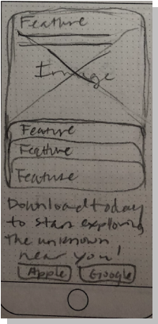
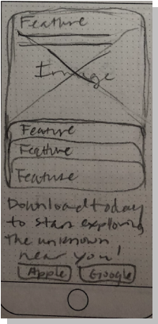

The Portland Metro Beekeepers Association (PMBA) is a local organization created to connect beekeepers with community resources and advocate for environmental justice. Our group was inspired to redesign their online presence in an effort to increase web accessibility and increase association membership.
Our research included online surveys, user interviews, a stakeholder interview, and a heuristic analysis to identify points that needed alteration on the existing PMBA website.
What was the greatest factor in determining why you joined a beekeepers association?

We posted our survey on beekeeping subreddits to engage with both professional and amateur beekeepers. Our main takeaways were users’ interest in educational resources and desire for an engaging community.
1. Links
Plain links on the cluttered background are difficult to register
2. Patch Logo
Cute design, but it doesn’t scale down well and the spacing is not consistent
3. Menu Button
Odd to have both a drop down menu bar and hamburger navigation, feels inconsistent

4. Photo on photo
Photos need a border or shadow to stand out against the background
5. BG Image
Large scale, full opacity image for a background makes the website look cluttered
6. Fonts
Text is given a different font treatment to draw the user’s attention, which is effective but decreases consistency
When testing the existing site with our users, we found that the information was clearly presented but the aesthetics were lacking.
Gains
Pains
Talking to the PMBA communicator revealed that they were more concerned about current member experience than gaining new members, contrary to our assumptions. They noted interest in a public online storefront and member forum, both elements of interest by survey respondents as well.

After compiling our interview and survey data, it was clear that people’s interest in joining beekeeping associations was primarily to connect with others and to find information and resources on beekeeping.
“Amateur beekeepers are looking for education and mentorship by joining a beekeeping society to access local beekeeping workshops and other in-person events. Beekeeping associations want to provide education and community to beekeepers and need to increase membership to be most effective. How might we increase beekeeper society membership, especially among younger beekeepers, and most effectively provide members with access to these educational resources?”


We decided on a neutral dominant color scheme, with black being the most prominent, to give the app a polished yet mysterious feel. We also wanted to incorporate a “glitch” effect, using red and electric blue as secondary colors to add visual interest and enhance the overall aesthetic. This was one step of a complete style guide that was built as we solidified our design decisions.
Sketches
 



Each of our team members independently created sketches for our app and landing page designs, ensuring we all had a voice in the final product. We created an early prototype using these sketches to put our ideas together and make final design decisions. This was an integral step in collaboration and solidifying our vision for the final product.
App Wireframe

Coaching
Screen
Home
Page
Tour
Details
The first wireframe our PeculiAR gave us a chance to encounter obstacles, like how we wanted our user to physically interact with the locations, and provided a resource for early user testing.
Landing Page Wireframe

Our initial landing page design focused on the basics of introducing our user to the app and showing off features to pique their interest. As it developed, so too did our goal, to convert a potential user from “curious” to “customer”. Bold graphics and an easy-to-follow user funnel became keystones in our plan to create user interest.


Home Screen Iterations


Filter Iterations


Map Iterations


Introduction Iterations


Hero Iterations


Feature Highlight Iterations


67% of voters favored the AR button in the top right corner, stating:
We decided to keep the AR button in the center tab bar to keep the focus of the app on the AR element, but changed the icon to incorporate the frame corners in response to the feedback.


55% of voters favored the grey card over the red card, stating:
Although the preference was not strong, we chose the grey and fixed the text box spacing in response.
Objectives
Usability testing feedback:
This UX case study demonstrates a considerable lift from previous work me and my teammates had completed prior. We tackled a large project- both developing a functional app prototype and a landing page for marketing the app in just three weeks. My role as the primary FE developer required rapid growth in my knowledge of HTML, CSS, and JS, which I feel significantly more confident in after completing this project. We spent a lot of time carefully considering our users’ needs, especially around their ethical considerations when engaging with true crime media. User interviews and the responses we got when attempting to post our survey on social media were integral to the process, even if those responses were not always positive. Even in a short time frame trusting the process and working through challenges as a team helped me develop skills in problem solving, multi-aspect project management, and team building.